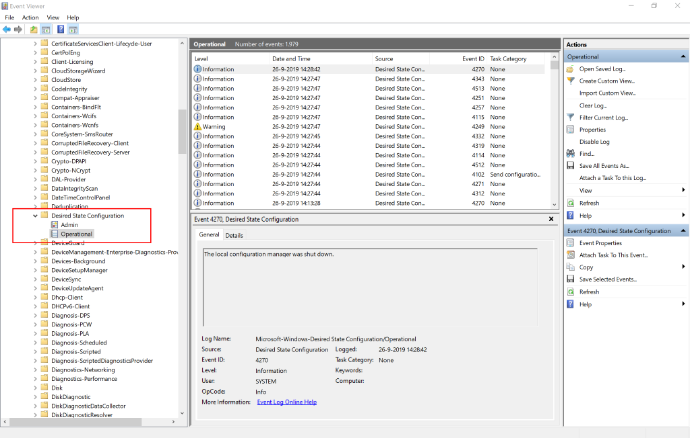

The Local Configuration Manager (LCM) in PowerShell Desired State Configuration (DSC) logs its deployment progress and errors on several places. The most commonly known location is the event log, where errors are logged in the log: Applications and Services Logs \ Microsoft \ Windows \ Desired State Configuration \ Operational
This log contains various events that were generated during a DSC job, it is however less useful to track the progress of a running job.
When doing a push deployment using Start-DscConfiguration, you can use the -Verbose parameter to output verbose logging to the screen. A downside of this verbose logging is that reboots will kill this logging. After the restart DSC continues deploying the configuration, without you being able to track its progress. The same is true for a Pull deployment, where verbose logging isn’t available at all.
Fortunately there is a log that is not known by everybody. During each DSC job (even when -Verbose hasn’t been specified), all Verbose output is always written to log files in: C:\Windows\System32\Configuration\ConfigurationStatus
For each job, DSC creates two files:
{<DSC_Job_Id>}-0.mof
This file contains LCM configuration, resources not in the desired state and the results of the DSC job.
{<DSC_Job_Id>}-0.details.json
This file contains the verbose logging in JSON format.
If you want to know the job id of a specific DSC job, the cmdlet Get-DscConfigurationStatus is your best friend. Without parameters this cmdlet will only retrieve the most recent job and show you the details:
PS C:\> Get-DscConfigurationStatus | fl
JobID : {CB285D33-E069-11E9-B86F-B4AE2BDC70C4}
HostName : SERVER
Error :
Locale : nl-NL
IPV4Addresses : {169.254.64.242, 169.254.192.125, 192.168.0.1...}
IPV6Addresses : {fe80::944e:555:4c67:40f2%7, ::2000:0:0:0, fe80::b431:fdc4:c5a5:c07d%16...}
MACAddresses : {B6-AE-2B-DC-71-C2, B6-AE-2B-DC-74-C2, B4-AE-2B-DC-70-C3, B4-AE-2B-DC-70-C4}
LCMVersion : 2.0
Mode : PUSH
NumberOfResources : 1
MetaData : Author: ykuijs; Name: SChannelDsc_Test; Version: 2.0.0; GenerationDate: 07/03/2019 21:43:58; GenerationHost: SERVER;
MetaConfiguration : MSFT_DSCMetaConfiguration
Type : Consistency
Status : Success
StartDate : 26-9-2019 16:27:41
DurationInSeconds : 0
RebootRequested : False
ResourcesInDesiredState :
ResourcesNotInDesiredState : {[SChannelSettings]ConfigureSChannel}
PSComputerName :
If you want to know which DSC jobs have ran in the past period, you can add the -All parameter, which outputs all executed jobs:
PS C:\> Get-DscConfigurationStatus -All
Status StartDate Type Mode RebootRequested NumberOfResources
------ --------- ---- ---- --------------- -----------------
Success 26-9-2019 16:27:41 Consistency PUSH False 1
Success 26-9-2019 16:27:40 Consistency PUSH False 1
Success 26-9-2019 15:27:44 Consistency PUSH False 1
Success 26-9-2019 15:12:45 Consistency PUSH False 1
Success 26-9-2019 15:12:44 Consistency PUSH False 1
Success 26-9-2019 14:57:44 Consistency PUSH False 1
Success 26-9-2019 14:42:45 Consistency PUSH False 1
Success 26-9-2019 14:42:44 Consistency PUSH False 1
Success 26-9-2019 14:27:44 Consistency PUSH False 1
...
You can use the pipeline and filter to extract the job you are interested in. For example:
Get-DscConfigurationStatus -All | Where-Object { $_.StartDate -gt ((Get-Date).AddHours(-2)) -and $_.Status -eq "Failure" }
While diving into this topic, DSC presented me with a not so nice surprise: When a DSC job is running, not only the Get-DscConfigurationStatus cmdlet does not work, also the logfile that is currently being created cannot be read! Neither via Windows Explorer, nor via PowerShell. So how can you keep track of the progress of an active DSC job?
Fortunately some digging around on the Internet resulted in a solution!
I have created a PowerShell script that uses Get-DscConfigurationStatus to retrieve all DSC jobs.
If the cmdlet succeeds, it will show all results in a Gridview so you can select the job you are interested in. When you click Ok, the script retrieves the logfile, reads the JSON and displays the results in a Gridview.
If the cmdlet fails, it knows a DSC job is currently running and uses Volume Shadow Copy to open a copy of the most recent log file.
Important: DSC flushes all caches log entries to the log file in chunks. So unfortunately the log file won’t be 100% accurate, but pretty close!
You can find the script here